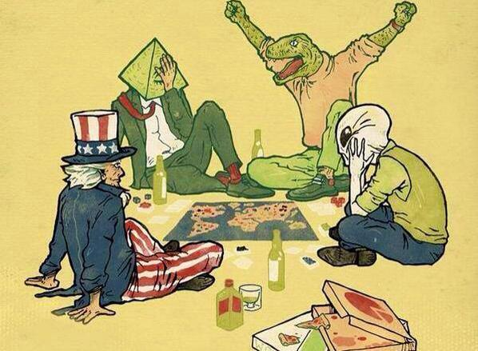

Тео́рия за́говора, также известная как конспироло́гия — объяснения общественно значимых событий, определенные исторические явления, или ход истории в целом как результат заговора со стороны некоторой группы людей, управляющих этим процессом из корысти, амбиций или иных групповых, клановых и др. интересов. Расширить познания
| Принадлежность | Техника | Персонал | Жилые модули | ||
|---|---|---|---|---|---|
| боевая | научная | военный | штатский | ||
| Нацисты | 174 | 67 | 378 | 215 | 8 |
| Рептилоиды | 498 | 564 | 765 | 309 | 24 |
| Масоны | 262 | 857 | 2065 | 8675 | 40 |
| ЛГБТ | 0 | 0 | 0 | 96 | 1 |